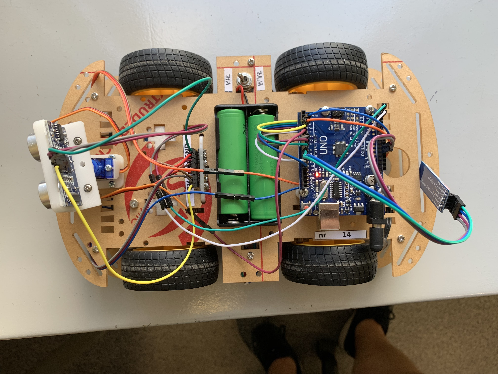

Software projektu został napisany w języku C++ (sterowanie samochodem) i Python (generowanie obrazu). Biblioteki używane w projekcie C++ to Servo.h, SoftwareSerial.h, TimerOne.h i Wheels.h.
Pliki projektu:
SonarCar.ino
Wheels.cpp
Wheels.h
drawing.py
Hardware projektu obejmuje (poza standardowym setupem używanym na laboratoriach) moduł HC05 służący do komunikacji Bluetooth.
| Moduł | Wyjście | Pin na arduino |
|---|---|---|
| Silniki (Prawe) | Napęd | 4 |
| Silniki (Prawe) | Napęd (Przód) | 8 |
| Silniki (Prawe) | Napęd (Tył) | 13 |
| Silniki (Lewe) | Napęd | 12 |
| Silniki (Lewe) | Napęd (Przód) | 6 |
| Silniki (Lewe) | Napęd (Tył) | 7 |
| Serwo | Napęd | 5 (PWM) |
| Sonar | Echo | A4 |
| Sonar | Trig | A5 |
| HC05 (BT) | RXD | 9 |
| HC05 (BT) | TXD | 10 |
| Czujnik szczelinowy 1 | D0 | 2 |
| Czujnik szczelinowy 2 | D0 | 3 |
Dodatkowo, każdy z modułów powinien mieć wyjścia GND i VCC, które można podłączyć do płytki Arduino lub innego źródła zasilania. W przypadku tego projektu wszystkie moduły (z wyłączeniem modułu HC05) zasilane były z baterii.

W kodzie znajduje się kilka obiektów, które są ważne z punktu widzenia programu. Ich definicje znajdują się poniżej:
SoftwareSerial BTSerial(10, 9);
Servo serwo;
Wheels w;
...
//setup()
BTSerial.begin(9600);
serwo.attach(SERVO);
w.setSpeed(SPEED);
Samochód porusza się i zlicza ilość przerwań wywołanych przez czujniki szczelinowe za pomocą rozszerzonej o następujący fragment biblioteki Wheels:
void cntplus(){
cnt++;
}
Wheels::Wheels(){
pinMode(2, INPUT);
pinMode(3, INPUT);
attachInterrupt(digitalPinToInterrupt(2), cntplus, CHANGE);
attachInterrupt(digitalPinToInterrupt(3), cntplus, CHANGE);
}
Samochód porusza się w linii prostej, więc suma ilości przerwań dobrze ilustruje pokonaną przez niego drogę.
Korzystając z delikatnie zmodyfikowanej funkcji lookAndTellDistance możemy sprawdzać w jakiej odległości od samochodu (w mm) znajduje się przeszkoda.
int lookAndTellDistance(byte angle) {
unsigned long tot;
unsigned int distance;
serwo.write(angle);
delay(300);
digitalWrite(TRIG, HIGH);
delay(10);
digitalWrite(TRIG, LOW);
tot = pulseIn(ECHO, HIGH);
distance = 10 * (tot / 58);
Serial.write(distance);
return distance; //mm
}
Poniższy fragment to de facto serce całego programu, fragment który sprawia że wszystko razem działa. Kod składa się z dwóch bloków, które odpowiadają za patrzenie na lewo i na prawo. W zasadzie kod tłumaczy się sam. Na początku auto zatrzymuje się i patrzy w lewo. Jeśli przeszkoda jest dalej niż 4m (co prawdopodobnie jest błędem pomiaru), autko podjeżdża minimalnie do przodu i jednokrotnie powtarza pomiar. Następnie odpowiednia informacja jest wysyłana w umówionym formacie przez moduł bluetooth. Zawarte są tam 3 informacje: Strona; zmierzony w mm dystans; wartość licznika przerwań (de facto pokonany dystans w momencie pomiaru), przykładowo <L;420;2137>.
Przy obrocie sonaru sprawdzane są jeszcze 3 kąty z przodu. Jeśli auto jest blisko przeszkody, kończy swoją pracę.
void loop() {
w.stop();
int distanceLeft = lookAndTellDistance(LEFT);
if(distanceLeft > MAX){ //repeat if over limit
w.forward();
delay(SMALLSTEP);
w.stop();
int distanceLeft = lookAndTellDistance(LEFT);
}
BTSerial.print("<L;");
BTSerial.print(distanceLeft);
BTSerial.print(";");
BTSerial.print(w.cntr);
BTSerial.print(">");
if (lookAndTellDistance(FRONT+DEGS) <= TOL || lookAndTellDistance(FRONT) <= TOL ||
lookAndTellDistance(FRONT-DEGS) <= TOL) {
w.stop();
exit(0);
}
w.stop();
int distanceRight = lookAndTellDistance(RIGHT);
if(distanceRight > MAX){ //repeat if over limit
w.forward();
delay(SMALLSTEP);
w.stop();
int distanceRight = lookAndTellDistance(RIGHT);
}
BTSerial.print("<R;");
BTSerial.print(distanceRight);
BTSerial.print(";");
BTSerial.print(w.cntr);
BTSerial.print(">");
if (lookAndTellDistance(FRONT-DEGS) <= TOL || lookAndTellDistance(FRONT) <= TOL ||
lookAndTellDistance(FRONT+DEGS) <= TOL) {
w.stop();
exit(0);
}
w.forward();
delay(100);
}
W powyższych fragmentach kodu wykorzystanych jest wiele stałych, zatem poniżej wrzucam blok z definicjami
// constants
#define SPEED 150
#define LEFT 180
#define RIGHT 0
#define FRONT 90
#define TOL 200
#define DEGS 20
#define MAX 4000
#define SMALLSTEP 25
// piny dla sonaru (HC-SR04)
#define TRIG A4
#define ECHO A5
// pin kontroli serwo (musi być PWM)
#define SERVO 5